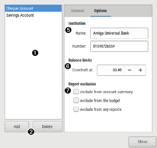

Using accounts dialog

 Account list
Account list
display the actual list of accounts in the wallet. The account at the top of the list will be the one to be displayed when opening your wallet. You can easily change the accounts order using Drag&Drop process.
 Buttons
Buttons
| Add | add a new empty account. |
|---|---|
| Delete | delete the active account. This is only possible if the account has no transactions. |
General
 Account
Account
| Type | specify the type of the account |
|---|---|
| Currency |
specify the currency of the account
|
| Start balance | specify the initial balance amount, i.e the balance before the first transaction. |
| Notes | optional notes you may want to add |
| This account was closed | specify the bank account is closed. Please also note that closed account are no more considered for reports. |

 Current cheque number
Current cheque number
| Checkbook 1 | specify the next cheque number of first pad to be used (this is auto updated later when you add some transactions). |
|---|---|
| Checkbook 2 | some of the above but for a second cheque pad (for a joined account) |
Options
 Institution
Institution
| Name | specify the bank name where the account is registered. |
|---|---|
| Number | specify the bank account number itself. |
Limits
| Overdraft at | specify the balance threshold, if you have an authorized balance, this will be used in the Balance report window. |
|---|
 Report exclusion
Report exclusion
| Exclude from account summary | the account will must not be used into the account summary list of the main window. |
|---|---|
| Exclude from the budget | the account will not be used for the budget data. |
| Exclude from any reports | the account will not be used for any report data. |